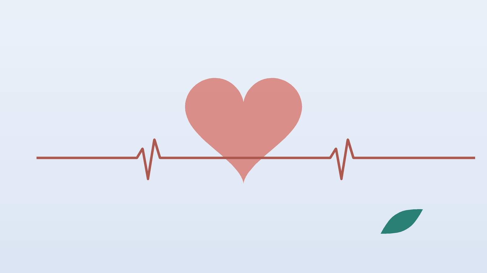

건강 칼럼 · 인천 서맥 한의원
맥이 느리고 자주 어지럽다면, 서맥 원인 확인과 한방 관리

나의 느린 맥, 이런 모습인가요?
- 가만히 앉아 손목 맥을 1분간 세어 보면 60번이 안 된다
- 계단을 오르거나 조금만 걸어도 숨이 차고 다리가 무겁다
- 눈앞이 아득해지며 주저앉고 싶었던 적이 있다
- 베타차단제, 칼슘통로차단제, 디곡신 같은 심장약이나 혈압약을 먹고 있다
- 추위를 많이 타고 붓기·변비·체중 증가가 함께 생겼다
- 스마트워치에 낮 동안에도 40~50대 심박수가 자주 찍힌다
이 체크리스트는 진단 도구가 아니라 상담이 필요한지 가늠해 보는 참고용입니다. 서맥의 종류는 심전도로만 확인할 수 있습니다.
맥이 느리면 모두 병인가요? 원인은 무엇인가요?
일반적으로 쉬고 있을 때 심박수가 1분에 60회 미만이면 서맥이라 부르고, 2018년 미국심장학회·미국심장협회·미국부정맥학회(ACC/AHA/HRS) 서맥 진료지침은 동성 서맥의 기준을 50회 미만으로 더 낮춰 잡기도 합니다. 숫자보다 증상이 중요합니다. 지구력 운동을 오래 한 분은 40~50회대로 뛰는 일이 흔하고, 깊은 잠에서는 누구나 맥이 느려지며, 증상 없는 느린 맥은 대개 치료 대상이 아닙니다.
문제가 되는 서맥은 크게 두 갈래입니다. 심장 박동을 시작하는 동결절의 힘이 떨어져 맥이 너무 느려지거나 멈췄다 뛰는 동기능부전증후군, 그리고 심방의 신호가 심실로 넘어가다 지연되거나 끊기는 방실차단(1도, 2도, 완전 방실차단)입니다. 이 밖에 베타차단제, 베라파밀·딜티아젬 같은 칼슘통로차단제, 디곡신, 아미오다론 같은 약물, 갑상선기능저하증, 칼륨이 지나치게 높은 고칼륨혈증 같은 전해질 이상도 맥을 늦춥니다. 이런 원인은 약 조정이나 원인 치료로 회복되는 경우가 많아 심전도와 혈액검사로 먼저 가려냅니다.
119나 심장내과 진료가 먼저인 신호
- 정신을 잃고 쓰러졌거나, 곧 쓰러질 것처럼 눈앞이 캄캄해졌다
- 가슴이 조이거나 누르는 듯 아프다
- 숨이 차서 말을 잇기 힘들거나 누우면 더 답답하다
- 갑자기 말이 엉키고 사람이나 장소를 헷갈리는 등 정신이 흐려졌다
뇌로 가는 피가 부족하다는 신호일 수 있어 즉시 119를 부르거나 응급실로 가세요. 어지럼과 피로가 이어지면 심장내과에서 원인을 확인하며, 심박조율기가 필요한지는 심장내과에서 판단합니다. 심장약 때문에 맥이 느려진 것 같아도 처방약은 담당 의사와 상의 없이 끊지 마세요.
한의학은 느린 맥을 어떻게 보나요?
한의학은 맥의 빠르기를 의사의 호흡에 견주어, 한 호흡에 세 번 이하로 뛰는 맥을 지맥(遲脈)이라 불렀습니다. 명나라 이시진의 『빈호맥학(瀕湖脈學)』은 '지맥은 한 호흡에 세 번만 이르며, 양이 음을 이기지 못해 기혈이 차가운 것(遲來一息至惟三 陽不勝陰氣血寒)'이라 하여, 느린 맥을 대개 찬 기운과 부족한 양기의 표현으로 읽었습니다.
심장의 따뜻한 힘을 심양(心陽)이라 하는데, 이것이 약해지면 혈을 밀어내는 힘이 줄어 맥이 더디고 손발이 차며 조금만 움직여도 숨이 찹니다. 기혈이 함께 모자라거나 몸에 물이 고이는 경우가 겹치기도 합니다. 이런 해석은 심전도를 대신하지 않고, 위험한 원인을 배제한 뒤 몸의 바탕을 돌보는 기준으로 씁니다.
나는 어떤 유형일까?
1. 심양허(心陽虛) 차고 더딘 유형
- 이런 분에게 많아요
- 추위를 많이 타고 나이 들며 기운이 떨어진 분
- 나타나는 모습
- 맥이 느리고 힘이 없으며 움직이면 가슴이 허전하다
- 함께 오는 몸의 신호
- 손발과 등이 시림, 식은땀, 얼굴이 희고 부석함
- 진찰에서 보이는 모습
- 혀가 옅고 촉촉하며 맥이 느리고 약함
- 치료 방향
- 가슴의 양기를 데워 혈의 흐름을 돕는 방향 (계지감초탕 계열)
- 오늘부터 해 볼 것
- 찬물과 찬 과일을 줄이고 등과 목덜미를 따뜻하게 두세요.
2. 기혈양허(氣血兩虛) 바탕이 모자란 유형
- 이런 분에게 많아요
- 큰 병이나 수술 뒤, 식사량이 적은 분
- 나타나는 모습
- 조금만 무리해도 지치고 앉았다 일어서면 아득하다
- 함께 오는 몸의 신호
- 얼굴빛이 누렇고 손톱이 잘 갈라지며 건망이 있음
- 진찰에서 보이는 모습
- 혀가 담백하고 맥이 느리면서 가늘고 약함
- 치료 방향
- 기운과 혈을 함께 채우는 방향 (팔진탕 계열)
- 오늘부터 해 볼 것
- 단백질 반찬을 끼니마다 한 가지씩 더해 보세요.
3. 비신양허(脾腎陽虛) 붓고 무거운 유형
- 이런 분에게 많아요
- 몸이 잘 붓고 체중이 늘었으며 갑상선 수치를 들은 분
- 나타나는 모습
- 아침에 얼굴과 손이 붓고 몸이 천근만근이다
- 함께 오는 몸의 신호
- 변비나 묽은 변, 소변이 시원찮음, 허리가 시림
- 진찰에서 보이는 모습
- 혀가 크고 이 자국이 있으며 맥이 깊고 느림
- 치료 방향
- 속을 데우고 고인 물을 내보내는 방향 (진무탕 계열)
- 오늘부터 해 볼 것
- 갑상선 기능 검사를 받았는지 먼저 확인해 보세요.
한의원에서는 어떻게 진찰하나요?
- 검사지 확인: 심전도, 24~48시간 홀터 검사, 심장초음파 결과와 진단명을 먼저 봅니다.
- 약 목록: 심장약, 혈압약, 안약까지 드시는 약을 알려 주시면 확인해 처방합니다.
- 맥박과 혈압: 앉은 자세와 선 자세의 맥박·혈압을 비교합니다.
- 맥진·설진: 맥의 힘과 혀의 붓기로 찬 정도와 부족한 정도를 가늠합니다.
침·약침·한약 치료는 어떻게 하나요?
1. 침 치료
- 내관(內關): 손목 안쪽 주름 가운데에서 팔꿈치 쪽으로 2촌, 두 힘줄 사이. 가슴 답답함과 어지럼에 씁니다.
- 통리(通里): 손목 안쪽 새끼손가락 쪽 주름에서 위로 1촌. 심장 경락을 고르게 합니다.
- 심수(心兪): 다섯째 등뼈 아래에서 양옆으로 손가락 두 개 너비. 심장과 연결된 등의 혈입니다.
- 거궐(巨闕): 배꼽에서 위로 6촌, 명치 아래 정중선. 명치가 막힌 느낌에 씁니다.
- 족삼리(足三里): 바깥 무릎 눈에서 아래로 3촌, 정강이뼈 바깥쪽 한 손가락 너비. 기운을 북돋습니다.
심박조율기나 삽입형 제세동기를 지닌 분께는 침에 전류를 흘리는 전침과 저주파 전기 자극을 하지 않고, 일반 침만 시행합니다. 서맥에 대한 침 연구는 아직 소규모라, 맥박 수보다 어지럼·피로·손발 냉증 같은 불편감을 더는 데 목표를 둡니다.
2. 약침
날개뼈 사이와 목덜미가 굳고 시린 분께 약침을 시행합니다. 손발과 등이 시린 분께는 온열 요법도 함께 진행합니다.
3. 한약
탕약은 찬 몸을 데우고 모자란 기혈을 채우는 방향이며, 맥박을 올리거나 심장약을 대신하는 약이 아닙니다. 디곡신이나 항부정맥제를 드시는 분은 칼륨과 맥박에 영향을 줄 수 있는 약재를 빼고 처방합니다. 임신 중이거나 신장 질환·갑상선 질환 병력이 있다면 진료 때 꼭 알려 주세요. 확인 후 안전한 약재로 처방합니다.
원장님이 네이버 블로그에 진료 이야기와 건강 정보를 꾸준히 올리고 있습니다. 더 많은 이야기는 블로그에서 확인해 보세요.
블로그 보기관리는 어떤 순서로 진행되나요?
- 심장내과 확인 심전도·홀터 검사와 갑상선·전해질 혈액검사로 서맥의 종류와 원인, 심박조율기 필요 여부를 확인합니다.
- 첫 한방 진료 검사 결과와 약 목록을 보고 유형을 정합니다.
- 2~6주 주 1~2회 침 치료와 탕약, 보온과 가벼운 운동을 이어 갑니다.
- 경과 점검 맥이 더 느려지거나 새 증상이 생기면 심장내과 재진을 권합니다.
기간과 횟수는 서맥의 원인과 복용 중인 약, 동반 증상에 따라 달라지며 진찰 후 개인별로 안내합니다.
느린 맥과 함께 지내는 생활 관리
- 맥박 일지: 아침과 저녁에 1분씩 맥을 세어 적고, 어지러웠던 순간의 상황도 남겨 진료 때 보여 주세요.
- 천천히 일어나기: 누웠다가 바로 서지 말고 침대 가에 잠시 앉아 있다가 일어나세요.
- 몸 데우기: 찬 음식을 줄이고 겨울에는 목과 발목을 덮어 체온을 지키세요.
- 운동: 걷기처럼 숨이 약간 찰 정도의 운동을 꾸준히 합니다.
- 수면과 술: 잘 때 숨이 멈춘다는 말을 들었다면 수면 검사를 받아 보세요.
다른 진료가 함께 필요한 경우
- 추위를 타고 붓고 체중이 늘었다면 내과에서 갑상선 기능 검사를 받으세요. 갑상선약을 드시는 분은 임의로 끊지 마세요.
- 콩팥 질환이 있거나 칼륨 보충제를 드신다면 칼륨 수치를 확인하세요.
- 심박조율기를 단 분은 정해진 점검을 계속 받으세요.
자주 묻는 질문 Q&A
- Q1. 맥이 50대인데 증상은 없어요. 괜찮은가요?
- 운동을 꾸준히 하는 분이나 수면 중이라면 정상일 수 있지만, 한 번은 심전도로 확인해 두세요.
- Q2. 서맥이면 꼭 심박조율기를 달아야 하나요?
- 아닙니다. 증상과 원인을 보고 심장내과에서 판단하며, 약 조정만으로 좋아지기도 합니다.
- Q3. 혈압약 때문에 맥이 느려진 것 같아요.
- 약을 스스로 끊지 말고 처방한 의사에게 증상과 맥박 기록을 보여 주세요.
- Q4. 심박조율기가 있어도 침을 맞을 수 있나요?
- 전기 자극 없이 일반 침으로 시행합니다.
- Q5. 한약을 먹으면 맥이 빨라지나요?
- 맥박을 올리려는 처방이 아니라, 찬 몸과 피로 같은 불편감을 돌보는 방향으로 씁니다.
- Q6. 스마트워치 심박수가 낮게 나와요.
- 손목 맥을 직접 세어 보고, 반복되면 심전도를 받아 보세요.
- Q7. 커피를 마시면 맥이 좋아지나요?
- 잠시 빨라질 수는 있지만 치료 방법은 아니며, 원인 확인이 먼저입니다.
- Q8. 집에서 해 볼 지압이 있나요?
- 앉아서 천천히 숨을 쉬며 내관혈을 엄지로 5초씩 지그시 눌러 보세요.
문원열 대표원장한의사 · 365스마일한의원
인천 서구 가정동 한자리에서 10년 넘게 진료하며, 환자 한 분 한 분의 아픔을 깊이 들여다보고 근본적인 원인을 찾는 진료를 지향합니다.
진료 안내
- 진료시간
- 평일 09:00~20:00 (점심시간 13:00~14:00)
토·일·공휴일 09:00~15:00 - 주소
- 인천광역시 서구 가경주로 46, 2층 (가정동)
인천2호선 가정중앙시장역 인근
영상으로 길 안내 보기 → - 주차
- 한의원 건물 바로 앞 1층 도원주차장
- 예약
- 예약 바로가기 또는 전화 예약
진료시간은 사정에 따라 바뀔 수 있으니 방문 전 전화로 확인해 주세요.
참고 자료
- Kusumoto FM, et al. 2018 ACC/AHA/HRS Guideline on the Evaluation and Management of Patients With Bradycardia and Cardiac Conduction Delay. Circulation, 2019
- Glikson M, et al. 2021 ESC Guidelines on cardiac pacing and cardiac resynchronization therapy. European Heart Journal, 2021
- 이시진(李時珍), 『빈호맥학(瀕湖脈學)』 지맥(遲脈)
- 질병관리청 국가건강정보포털 — 원문
※ 이 글은 일반적인 건강 정보이며, 개인의 상태에 따라 치료 방법과 결과는 다를 수 있습니다. 정확한 진단과 치료는 진료를 통해 결정됩니다. 침·약침 시술 후 드물게 멍, 통증 등이 생길 수 있습니다.